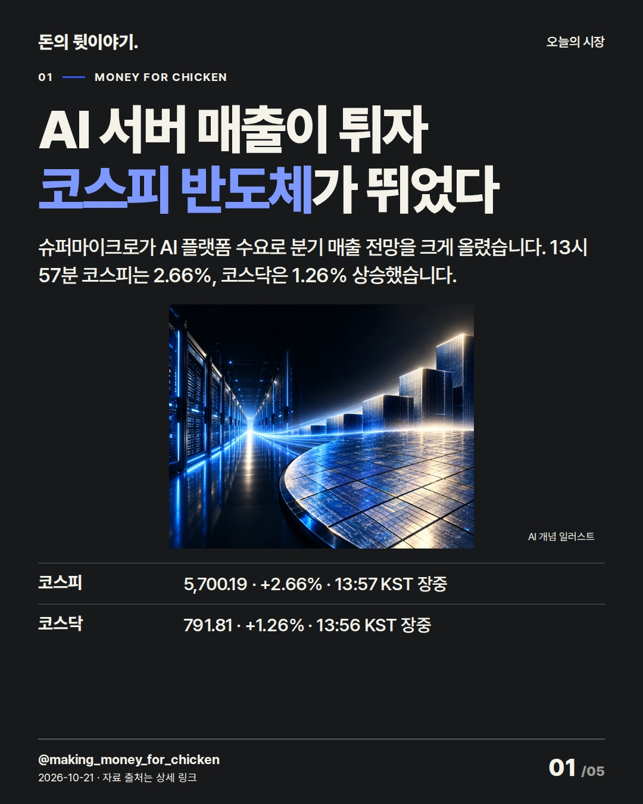
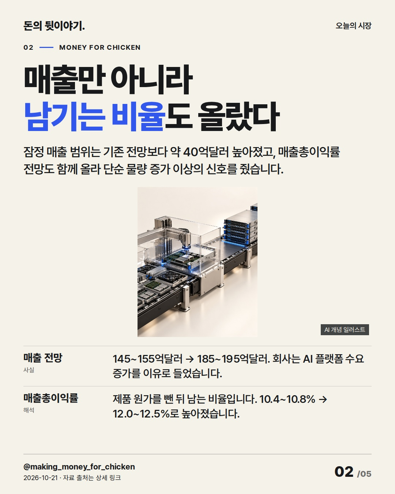
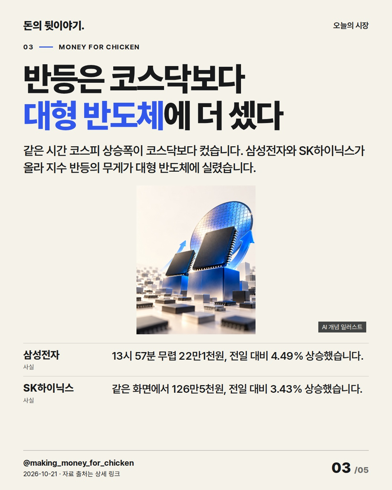
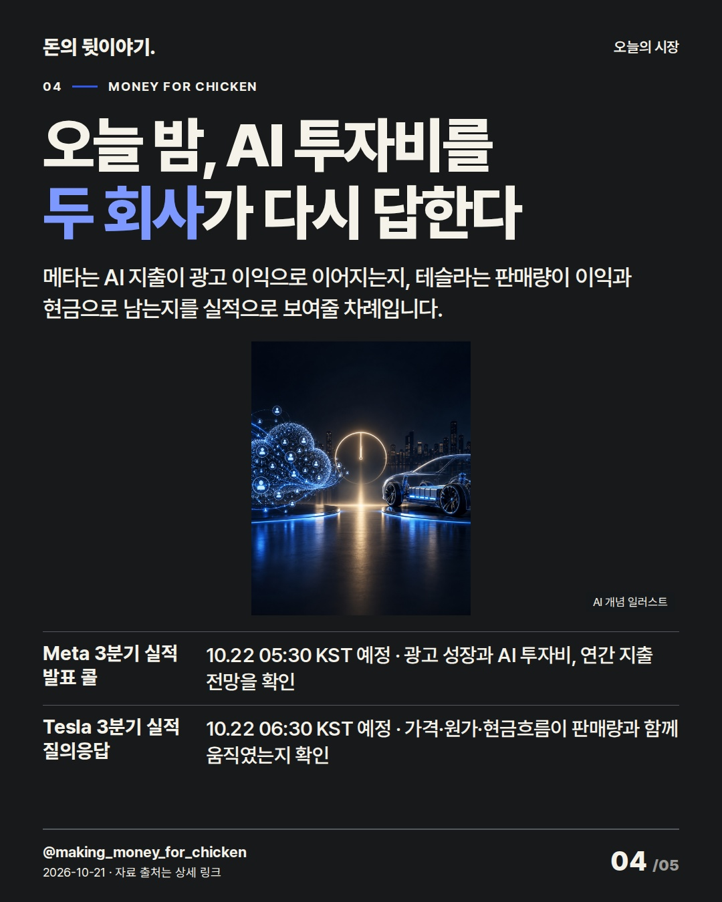
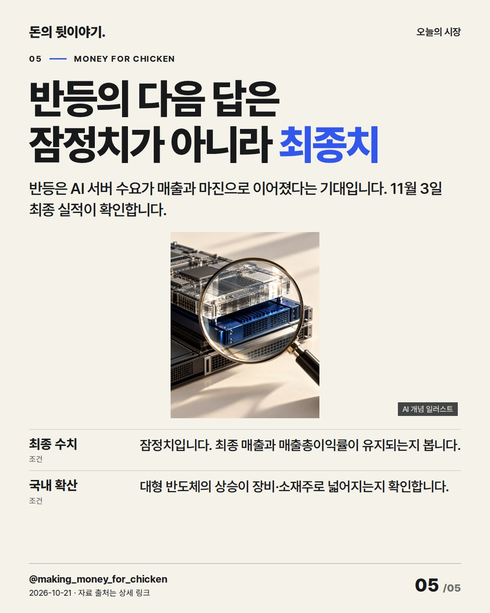

AI 서버 주문이 매출과 이익률로 바뀌자 한국 반도체주도 반등했습니다. 오늘 밤 메타와 테슬라 실적이 AI 투자와 이익의 연결을 다시 시험합니다. #코스피 #반도체 #미국실적

슈퍼마이크로가 AI 플랫폼 수요로 분기 매출 전망을 크게 올렸습니다. 13시 57분 코스피는 2.66%, 코스닥은 1.26% 상승했습니다.
AI 생성 개념 일러스트 · 실제 현장이나 공식 제품 사진이 아닙니다.

잠정 매출 범위는 기존 전망보다 약 40억달러 높아졌고, 매출총이익률 전망도 함께 올라 단순 물량 증가 이상의 신호를 줬습니다.
AI 생성 개념 일러스트 · 실제 현장이나 공식 제품 사진이 아닙니다.

같은 시간 코스피 상승폭이 코스닥보다 컸습니다. 삼성전자와 SK하이닉스가 올라 지수 반등의 무게가 대형 반도체에 실렸습니다.
AI 생성 개념 일러스트 · 실제 현장이나 공식 제품 사진이 아닙니다.

메타는 AI 지출이 광고 이익으로 이어지는지, 테슬라는 판매량이 이익과 현금으로 남는지를 실적으로 보여줄 차례입니다.
AI 생성 개념 일러스트 · 실제 현장이나 공식 제품 사진이 아닙니다.

반등은 AI 서버 수요가 매출과 마진으로 이어졌다는 기대입니다. 11월 3일 최종 실적이 확인합니다.
AI 생성 개념 일러스트 · 실제 현장이나 공식 제품 사진이 아닙니다.
{
"improvement": "최근 GM·관세·TSMC·베이지북·UnitedHealth 글의 짧은 결론과 반복 단서를 비교해, 이번에는 AI 서버 주문이 매출·마진·국내 대형주로 전달되는 이유를 각 장에 한 단계씩 보강했습니다.",
"reason": "최근 글은 숫자 다음의 작동 방식이 생략되거나 마지막 장이 일반적인 확인 문구로 끝났습니다. 오늘 반등은 매출과 매출총이익률이 함께 상향된 점이 핵심이라 단순 급등 종목 나열을 버렸습니다.",
"application": "제목 후보 'AI 서버 매출이 튀자 코스피 반도체가 뛰었다', '슈퍼마이크로의 주문이 한국 반도체를 깨웠다', '매출과 마진이 같이 뛰자 반도체 반등이 번졌다' 중 첫 안을 선택했습니다. 2장에서 매출총이익률 뜻을 풀고 3장에서 코스피·코스닥 차이를 대형 반도체 집중도로 연결했습니다.",
"avoided_repetition": "매출 상향은 1~2장, 국내 확산은 3장, 미국 검증 일정은 4장, 잠정치를 뒤집을 조건은 5장에만 배치했습니다. GM의 현금·자사주 비유와 TSMC의 공정 숫자 나열은 반복하지 않았고 다음 편은 최종 실적의 고객 구성을 보완합니다."
}투자 참고용 · 매수·매도 권유 아님.